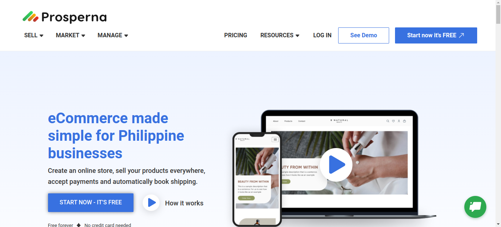

Prosperna
As a QA for this big project, we use Testing types like User
Acceptance Testing (UAT), Integration Testing, Performance
Testing, API Testing and Regression Testing. The project has admin
and marketing site that we need to test.
Click this icon below to view.